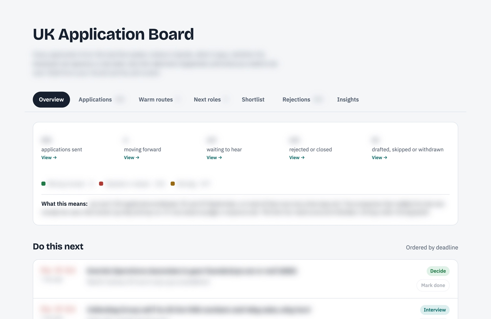

Selected work / Agent workflow
Job-search and LinkedIn outreach system
One system I designed and run with Claude Code for my own job search, with two halves that feed each other. The job side watches about 415 company job boards, screens roles against rules I wrote, and builds and tests a tailored CV for each. The outreach side takes those same roles, works out who to contact at each company, and runs the LinkedIn outreach automatically.
- My role
- Rules, specifications, review, approvals
- Built with
- Claude Code, Codex, Python
- Period
- Sep to Oct 2026 (a simpler version ran from May)
- Status
- In daily use, on my laptop
At a glance
- Problem
- Thousands of job ads, a fixed AI budget, and no room for careless applications.
- What I did
- Wrote the rules, specified the system, asked for an audit, and had the controls rebuilt as code.
- Result
- One sweep: 25,037 postings down to 4 AI reads. 150 tests pass. A gate refuses below-bar roles and banned content.
- Built with
- Claude Code, Codex, Python, public job-board APIs
What it does
It runs my job search as a pipeline. It reads the public job boards of about 415 companies (414 resolved in the 20 Oct sweep), filters postings with rules I wrote, and has an AI read the few that survive and fill in a structured assessment with quotes from the ad. Plain code, not the AI, then turns that assessment into a decision, so the same facts always give the same answer.
For roles that pass, it builds a CV and cover letter from a fact bank of things I have verified about my own experience, tests them, and holds them until I say apply.
In total my agents have screened over 470,000 job postings: 271,536 across 12 recorded sweeps of company job boards (23 September to 20 October 2026), and 204,649 in one large cloud run. Both are counted per run, so a posting seen in two runs counts twice.
The cloud finder run
For one push I ran the search as a cloud session of about 300 agents: cheaper models did the reading, and stronger ones re-checked their picks.
- Collected 204,649 postings: LinkedIn 122,189 (130+ searches across the UK and 25 cities), company careers sites 65,155 (about 1,250 boards), Reed 14,935, Workday 1,420, and about 950 from other boards.
- Removed duplicates, leaving 62,627 unique postings.
- Dropped roles already in my tracker, leaving 9,518 new ones.
- Read in full and scored about 2,570 against my written rules and verified profile.
- Checked a second time about 200, including that each job was still open on the company's own site.
- Shortlisted 125 roles, 45 of them marked 'apply'.
The counts come from the run's own summary, saved to my Drive, and the 125-role shortlist sheets are there too.
The outreach half
The two halves share one list of target roles. Roles that pass the screen in my target city are picked up by the outreach side:
- Who to contact. A skill ranks people at that company by how warm the route in is: an introduction through someone I know, a first-degree connection, a fellow alumnus, or the person doing the job.
- Research. A short dossier on each person, so the note says something specific to them.
- Write. A second skill drafts the note in my voice from a profile of facts I've verified, framed around the live role at their company.
- Check. A script refuses notes that are too long, read above a set level, ask more than one question, use banned phrases or don't say who I am.
- Send. Notes that pass go out automatically, under daily and weekly caps to keep the account safe.
- Replies and meetings. Replies are tracked against the role. Confirmed calls get a prep note and go in my calendar with the key points.
- Measure. Contacts and replies are logged in one state file that drives a networking board.
So far it has tracked about 400 contacts. Both skills are published: linkedin-target-finder and linkedin-networking-writer.
Why I built it
I was applying from abroad, at volume, with a fixed AI budget. Doing it by hand meant reading thousands of ads that I was never going to qualify for, and rewriting the same CV over and over. I also needed to stop a tired version of me from sending something careless. The constraints went in first: only real experience on a CV, no AI-written claims I could not back up, and nothing submitted until I say so.
My role and the AI's role
- Me: the goals, the written rulebook (which roles qualify, what counts as a hard no, when to ask me), the fact bank, the choice of checks, asking for the audit, deciding which of its findings to act on, and the instruction to apply.
- Claude Code: wrote the Python tools, the prompts and the test suite, and does the reading, building and checking.
- Codex: wrote the CV and cover-letter prompts that were merged into the master prompt, and reviewed the selection prompts.
I didn't hand-code it. My contribution is the specification, the rules and the decisions; Claude and Codex did most of the building and checking.
How it works
- Cheap filters first. Location, title and scope rules run before any AI is used. A sweep that sees zero postings reports an instrument failure instead of 'nothing found'.
- AI reads, code decides. The model extracts facts with quotes;
decide.pyapplies the tiers (apply, near miss, ask, drop). A score only ranks within a tier; it never decides one. - Criteria before the CV. A fresh agent that sees only the job ad writes the checklist, and it is frozen before the CV is written. The agent that writes the CV never writes the criteria.
- Tests, then a gate. Layout and parsing checks, a blind reader that scores coverage against the frozen checklist, and an honesty check against the fact bank. Then the pre-submit gate.
- Use the right model for each job. When the cheaper model scored identical CVs far lower than the stronger one, I kept coverage scoring on the stronger model and used the cheap one only for narrow checks.
What I caught and changed
In October I asked for an audit of the whole system. A fresh Claude Code session (Claude Opus) ran it on a frozen copy of the data, with five blind Sonnet judges. It's a separate review by the same model family, not an external audit, and it still found real problems:
- The gates I'd written existed only as prompt text. 61 of 98 measured submissions were below the bar in force at the time.
- Scoring the same ad three times moved the score by 5.5 points on average and flipped the decision in 2 of 8 cases.
- 23 of 42 regression tests of the old filters failed. For example, 'Chief of Staff' was being dropped and Leeds wasn't recognised as a UK city.
The audit's verdict was not safe to run on its own, and conditionally fine with a human in the loop. So I had the controls rebuilt as code: a pre-submit check, a submission freezer that hashes the exact files sent, a validated state writer and a run log. I also made the score rank within a tier instead of deciding one, because the audit showed it was too noisy to decide.
How it was checked
The audit compared the system's decisions with five AI judges that were blind to the system's scores, used a different rubric and had to quote the ad for every requirement. On the 47 roles that judges and adjudication called clear-cut, the system's apply-or-ask versus drop decision matched on 45 (35 if 'ask me' is not counted as a match). A regex-only baseline matched 19. All 822 judge quotes were found word-for-word in the ads.
The sample of 100 was deliberately skewed towards submitted and gate-dropped roles, so this is not an accuracy rate. It also measures the system before the rebuild, excludes the 53 borderline roles, uses judges from the same model family, and says nothing about whether a high score leads to an interview. I treat it as evidence that the screening is roughly right on easy cases.
A safe demonstration
Everything on this page uses aggregate counts or invented examples. The real data, CVs and contacts stay private. A synthetic run of the screening rules, using made-up ads from a fictional company, shows how individual sentences trigger a flag:
- 'Head of AI Adoption… 8+ years… manage a team' is flagged on years, and the system keeps the sentence that triggered it.
- 'Candidates must hold permanent right to work in the UK' is flagged on eligibility.
- 'You won't write production code… Strong academics are a plus' raises no flag, because negation and 'a plus' are handled.
- An assessment with every essential met and pay in range comes out as apply. Lower the pay below my floor and it becomes near miss. Add a technical gap and it becomes drop.
Where it is now
- 150 of 150 automated tests pass (re-run 20 Oct 2026). They cover the screening rules, the tier logic, the gate's refusals and the state writer.
- Between 11 and 18 Oct the gate logged 37 checks and refused 5: four where a form field matched the banned-content list, and one for a role below the bar.
- 36 of 36 frozen submission records re-verify against their hashes.
Limits
- No outcome measure. There is no evidence yet that the score predicts interviews, and the system makes no claim that it does. A checkpoint is pre-registered for when enough applications have resolved.
- Some CV tests are still procedural rules rather than code, and their run records are partial.
- The honesty checks are AI models reading a fact bank that AI helped write. An AI honesty audit of 84 claims in my evidence notes found 8 stronger than the record, which were reworded. That shows they're needed, not that they're complete.
- It is a personal system on one laptop, not a product.


Tools and credits
- Built with Claude Code (Anthropic) and Codex (OpenAI). Python standard library.
- Job data from the public job-board APIs of Ashby, Greenhouse and Lever.
- CV parse testing uses MuPDF, pypdf and Apple PDFKit.
Status checked 20 Oct 2026. Counts come from scripts run over the system's own files on that date; the test suite was re-run the same day.